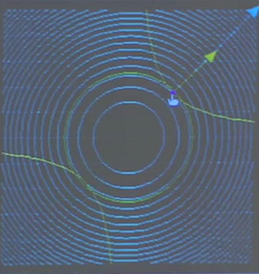

Lagrange Multipliers
Table of Contents
Lagrange multipliers solve the problem where we want to minimize or maximize a function \(f(x,y,z)\) where \(x\), \(y\), and \(z\) are not independent; in other words, we have a constraint \(g(x,y,z)=c\) that must be satisfied by the variables.
It works by introducing a constant called the Lagrange multiplier, which we will represent with the symbol \(\lambda\).
We can then set up a system of equations to represent \(\nabla f = \lambda \nabla g\), and the constraint:
\begin{aligned} f_x &= \lambda g_x \\ f_y &= \lambda g_y \\ g &= c \end{aligned}Warning: this method doesn't tell us whether a solution is a minimum or a maximum, and we cannot use second derviatives. We must either manually calculate values of \(f\) or use geometric arguments.
1. Intuition
We can represent the constraint by considering all the points in which the level curves of \(f(x,y,z)\) intersect the level curve \(g(x,y,z)=c\). Below is an example where \(f(x,y) = x^2 + y^2\) and \(g(x,y)=xy=3\) (minimizing the distance to the origin from the hyperbola):

Notice that at the critical point, the two level curves must be tangent to each other. This is because if they are not tangent, you can increase or decrease the value of \(f\) by simply moving along the curve, and so therefore it is not a critical point.
It follows then that at this point, the gradient of \(f\) and the gradient of \(g\) must be parallel to each other; in other words, one is a multiple of the other. This multiple is what we call the Lagrange multiplier, which we will represent with the symbol \(\lambda\). It then leads to the system of equations we had before.
2. Proof
When we are not constrained, we know that a critical point occurs when all of the partial derivatives of the function at that point are equal to zero. However, when we are constrained by \(g=c\), we only care about the directions tangent to our constraint \(g=c\). Therefore, we can reformulate this condition by saying that a critical point of a constrained function occurs when the directional derivatives of all the unit vectors \(\hat{u}\) tangent to \(g=c\) are equal to zero.
In other words, for any \(\hat{u}\) tangent to \(g=c\), we must have:
\[ \frac{\text{d}f}{\text{d}s}_{|\hat{u}} = \nabla f \cdot \hat{u} = 0 \]
This means that the gradient of \(f\) must be perpendicular to \(\hat{u}\); or, the gradient of \(f\) must be perpendicular to the tangent plane of \(g=c\). However, since the gradient of \(g\) is also perpendicular to this tangent plane, it follows that the gradient of \(f\) must be parallel to the gradient of \(g\).